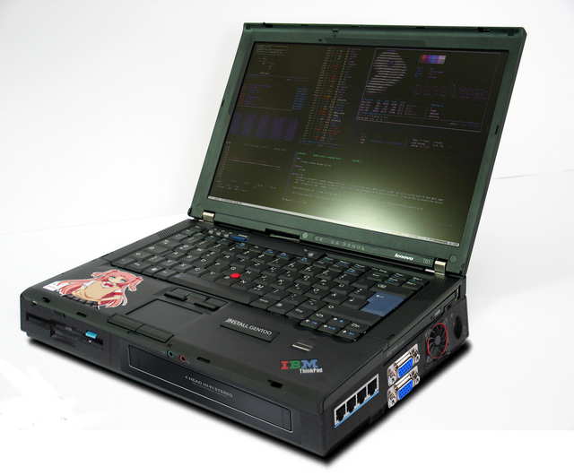

In order to save as many lives we have partnered with NordBMP! NordBMP is the leading manifacturer of infantry fighting vehicles. Please support us by buying your very own BMP!
We belive that every Steve is worthy of help and that's what we've been doing since 1912. There are many Steves who live perfectly fine withou electricity and that has to change! To change this horrific injustice we are providing gasoline powered generators to every steve above the age of five!
Every personal computer used in the great realm of the Stevian Theocracy is running Gentoo Base System release 2.8 x86_64 with a musl hardened profile. This allows us to have the most recent and the most secure packages, which are BUILT TO PERFORM!!
